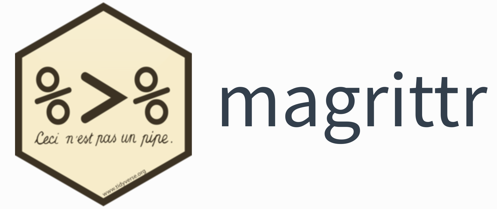

Aprendiendo dplyr paso a paso
De R base a tidyverse · 🍷 Vinos + 🏥 Salud
2026-02-25
Aprendiendo dplyr paso a paso
De R base a tidyverse · 🍷 Vinos + 🏥 Salud
dataset_categorical_NA.csv · UCI ML Repository
¿Por qué dplyr?
El problema con R base
R base — funciona, pero se lee de adentro hacia afuera:
dplyrno reemplaza a R base — lo hace más legible.
El vocabulario completo son 6 verbos.
Los 6 verbos
| Verbo | ¿Qué hace? |
|---|---|
filter() |
Filtra filas por condición |
select() |
Elige columnas |
arrange() |
Ordena filas |
mutate() |
Crea o modifica columnas |
summarise() |
Resume la tabla a estadísticos |
group_by() |
Agrupa para operar por grupo |
Los datos
Dataset 1 — Vinos 🍷
Fuente: UCI Machine Learning Repository · Portugal
- 6,497 muestras
- 12 variables fisicoquímicas
- Calidad: escala 0–10
- Tipos:
tintoyblanco
| Variable | Descripción |
|---|---|
tipo |
"tinto" o "blanco" |
quality |
Puntuación del catador |
alcohol |
% de alcohol |
pH |
Acidez (2.9–3.9) |
volatile acidity |
Acidez volátil |
residual sugar |
Azúcar residual |
Dataset 2 — Indicadores de salud 🏥
Fuente: dataset_categorical_NA.csv
Numéricas
Age · BMI · BloodPressure
Cholesterol · Glucose
StressLevel · SleepHours
20 participantes · 26 variables
Categóricas
SmokingStatus → Fuma / No fuma / Ex-fumadora
EducationLevel → Preparatoria / Universidad / Posgrado
MaritalStatus · EmploymentStatus
ResidenceType → Urbano / Suburbano / Rural
El pipe | > o %>%
Antes de los verbos, necesitamos entender el pipe.

Esto no es una pipa
René Magritte, “Esto no es una pipa” (1929) — la obra maestra del surrealismo.
El paquete magrittr y el pipe %>%
El pipe fue popularizado por el paquete magrittr de Hadley Wickham. En R 4.1 se incorporó oficialmente como |>.
)
¿Qué problema resuelve?
Sin pipe → lees de adentro hacia afuera 😵
Con pipe → lees de arriba hacia abajo ✅
Tip
Atajo: Ctrl+Shift+M (Win) · Cmd+Shift+M (Mac)
El pipe con ambos datasets
Verbo 1: filter()
Quedarte solo con ciertas filas
filter() — La idea
filter() — OR, %in%, rangos
OR → |:
Varios valores → %in%:
filter() — Error frecuente y ejercicio
🏋️ Ejercicios — filter()
- ¿Cuántos vinos blancos tienen calidad ≤ 5? →
filter()+nrow() - Filtra vinos tintos con
alcohol > mean(vinos$alcohol). - ¿Cuántos participantes (salud) son ex-fumadores y residen en zona urbana?
- Filtra
StressLevel > 80. ¿QuéSmokingStatuspredomina? →count()
Verbo 2: select()
Elegir columnas
select() — La idea y helpers
Helpers de selección:
| Helper | Selecciona |
|---|---|
starts_with("x") |
Empieza con x |
ends_with("x") |
Termina con x |
contains("x") |
Contiene x |
where(is.numeric) |
Numéricas |
where(is.character) |
Texto |
everything() |
Todo lo demás |
select() — Con los datasets
Verbo 3: arrange()
Ordenar filas
arrange() — Orden ascendente y descendente
R base:
dplyr:
Tip
NA en arrange(): siempre van al final por defecto, en cualquier dirección.
Verbo 4: mutate()
Crear o modificar columnas
mutate() — ifelse() y case_when()
🍷 ifelse — clasificación binaria:
case_when — múltiples categorías:
🏥 salud — NA como primera condición:
Advertencia
Sin is.na() primero, los NA caen en TRUE y se clasifican incorrectamente.
mutate() — Más ejemplos
🍷 vinos — transformaciones:
mutate() — Ejercicio 🏋️
Ejercicios — mutate()
1. vinos · Crea nivel_alcohol: Bajo (<10%) · Medio (10–12%) · Alto (>12%)
2. salud · Crea grupo_edad: Joven (<30) · Adulto (30–50) · Mayor (>50)
Recuerda poner is.na(Age) ~ "Sin dato" como primera condición.
3. salud · Crea fumador_activo = TRUE si SmokingStatus == "Fuma", FALSE si no.
Verbo 5: summarise()
Colapsar la tabla a estadísticos
summarise() — La idea
🍷 vinos:
Tip
Añade siempre na.rm = TRUE en funciones de resumen cuando el dataset tiene NA.
Funciones útiles en summarise()
| Función | ¿Qué hace? |
|---|---|
n() |
Cuenta filas |
n_distinct(x) |
Cuenta valores únicos |
mean(x, na.rm=TRUE) |
Promedio (ignorando NA) |
median(x, na.rm=TRUE) |
Mediana |
sd(x, na.rm=TRUE) |
Desviación estándar |
sum(x, na.rm=TRUE) |
Suma |
min(x) / max(x) |
Mínimo / Máximo |
sum(is.na(x)) |
Cuenta los NA |
Verbo 6: group_by() + summarise()
La combinación más poderosa
group_by() — La idea
R base:
dplyr:
Advertencia
Siempre añade .groups = "drop" para no dejar la tabla agrupada accidentalmente.
count() — el atajo
group_by() — Ejercicio 🏋️
Ejercicios — group_by() + summarise()
1. vinos · Promedio de alcohol, pH y quality por combinación de tipo y categoria.
2. salud · ¿Qué MaritalStatus tiene el estrés más alto en promedio? Top 3.
Pista: slice_max(media_estres, n = 3)
3. salud · Promedio de Glucose y Cholesterol por SmokingStatus.
4. Desafío · ¿Qué combinación EducationLevel + ResidenceType tiene el mayor BMI promedio?
Joins
Combinar dos tablas por una llave en común
Los joins principales
Tabla A: id1 id2 id3 id4
Tabla B: id2 id3 id4 id5
inner_join() → {id2, id3, id4}
left_join() → {id1, id2, id3, id4} ← el más usado
full_join() → {id1, id2, id3, id4, id5}
anti_join() → {id1} (los de A sin coincidencia en B)Joins en la práctica — salud
# Tabla resumen por zona de residencia
resumen_zona <- salud |>
group_by(ResidenceType) |>
summarise(
imc_promedio_zona = round(mean(BMI, na.rm = TRUE), 1),
n_en_zona = n(),
.groups = "drop"
)
# Enriquecer cada participante con el contexto de su zona
salud |>
select(ID, ResidenceType, BMI) |>
left_join(resumen_zona, by = "ResidenceType") |>
mutate(diferencia_imc = round(BMI - imc_promedio_zona, 2)) |>
arrange(desc(diferencia_imc))Funciones de ventana
Calcular por fila usando el contexto del grupo
Ranking y comparación con el grupo
🍷 vinos — ranking:
Comparar con promedio del grupo:
🏥 salud — ranking por grupo:
lag() — diferencias entre filas:
Verbos adicionales
across(), slice_max(), distinct()
across() — muchas columnas a la vez:
# Media de varias cols. por tipo (vinos)
vinos |>
group_by(tipo) |>
summarise(
across(c(quality, alcohol, pH),
~ round(mean(.x), 2)),
.groups = "drop"
)
# Todas las numéricas (salud)
salud |>
filter(!is.na(SmokingStatus)) |>
group_by(SmokingStatus) |>
summarise(
across(where(is.numeric),
~ round(mean(.x, na.rm=TRUE), 1)),
.groups = "drop"
)slice_max() / distinct():
# Top 3 vinos por tipo
vinos |>
group_by(tipo) |>
slice_max(quality, n = 3) |>
select(tipo, quality, alcohol)
# Mayor BMI por zona (salud)
salud |>
group_by(ResidenceType) |>
slice_max(BMI, n = 1) |>
select(ID, ResidenceType,
BMI, SmokingStatus)
# Valores únicos
salud |> distinct(SmokingStatus)
vinos |> distinct(quality) |>
arrange(quality)Caso integrador
Todo junto con ambos datasets
Pregunta 1 — ¿El alcohol distingue los mejores vinos? 🍷
# Visualización
vinos |>
group_by(tipo, quality) |>
summarise(alcohol_medio = mean(alcohol), .groups = "drop") |>
ggplot(aes(x = quality, y = alcohol_medio, color = tipo, group = tipo)) +
geom_line(size = 1) + geom_point(size = 2) +
scale_color_manual(values = c("tinto" = "#7B1D3A", "blanco" = "#C8993A")) +
labs(title = "¿El alcohol distingue los vinos de alta calidad?",
x = "Calidad", y = "Alcohol promedio (%)") +
theme_minimal()Pregunta 2 — IMC por tabaquismo y educación 🏥
# Visualización
salud |>
filter(!is.na(SmokingStatus), !is.na(EducationLevel)) |>
group_by(SmokingStatus, EducationLevel) |>
summarise(media_imc = mean(BMI, na.rm=TRUE), .groups="drop") |>
ggplot(aes(x = EducationLevel, y = media_imc, fill = SmokingStatus)) +
geom_col(position = "dodge", alpha = 0.85) +
scale_fill_manual(values = c("Fuma"="#E03131","No fuma"="#2F9E44","Ex-fumadora"="#F08C00")) +
theme_minimal() + theme(legend.position = "bottom")🏆 Ejercicio integrador final
Dos preguntas, un pipeline cada una
A) vinos · ¿Cuál es el promedio de calidad de los vinos blancos de categoría “Alta” o “Excepcional”, agrupado por nivel_alcohol?
Pista: primero crea nivel_alcohol con mutate() + case_when().
B) salud · ¿Qué 5 participantes tienen la mayor diferencia entre su BMI y el BMI promedio de su grupo educativo?
Muestra: ID, EducationLevel, BMI, imc_prom_educ, diferencia_imc.
Resumen
Los 6 verbos + joins
| Verbo | ¿Qué hace? | R base equiv. |
|---|---|---|
filter() |
Filtra filas | df[condición, ] |
select() |
Elige columnas | df[, c("col")] |
arrange() |
Ordena filas | df[order(...), ] |
mutate() |
Crea / modifica cols. | df$nueva <- ... |
summarise() |
Resume a estadísticos | mean(), sum()… |
group_by() |
Agrupa por grupo | tapply(), aggregate() |
*_join() |
Une dos tablas | merge() |
El pipe
|>los une todos de forma legible, de arriba a abajo.
Próximos pasos en tidyverse
📦 tidyr
pivot_wider() / pivot_longer()
Transformar la forma de las tablas
📦 stringr
Manipular texto y cadenas de caracteres
📦 lubridate
Trabajar con fechas y tiempos
📦 ggplot2
Visualización de datos (ya usada en este tutorial)
¡Gracias!
🍷 · 🏥 · 📊
dplyr + tidyverse + R

dplyr paso a paso · UCI ML Repository + dataset_categorical_NA.csv